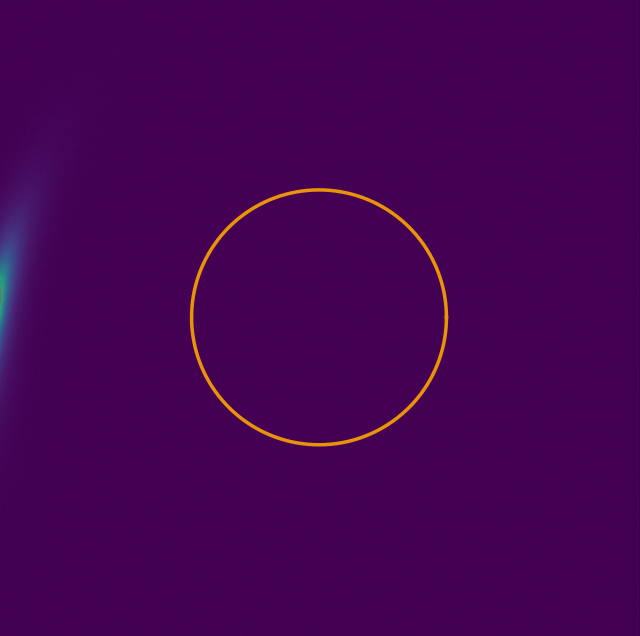

Sobre Mí
Soy originario de Los Ángeles, Chile, y estudiante de Astronomía, una carrera que me reveló mi gran vocación profesional: la programación y automatización. Analizar inmensos volúmenes de datos astronómicos de misiones como Kepler, Gaia DR3, TESS y simulaciones como IllustrisTNG me demostró el enorme potencial de Python para entender y modelar el universo.
Considero que poseo un perfil sumamente pragmático. Descubrir que cualquier proceso que uno imagine puede automatizarse me motivó a profundizar en cursos de Programación Avanzada. Actualmente, me encuentro en la recta final de mi carrera y cursando de forma paralela un Bootcamp de Desarrollo Fullstack. Mi objetivo es poder tomar todo ese poder del Backend y el procesamiento de datos, y plasmarlo en interfaces visuales que destaquen por su diseño y experiencia de usuario.
Mi proyecto en paralelo y hobby más demandante en la actualidad es personal: ser padre. Cuidar de mi hija recién nacida a tiempo completo me enseña a diario sobre resiliencia, prioridades y organización, lo que compagino firmemente con mis estudios y la programación.
A futuro, el ámbito investigativo es mi mayor proyección: deseo especializarme en la simulación y análisis de discos protoplanetarios, para lograr encontrar relaciones directas sobre cómo se originan los mundos oceánicos (Water Worlds) y entender qué mecanismos rigen su creación.
Práctica Profesional: Simulaciones de Discos Protoplanetarios
Durante mi práctica, desarrollé un marco de trabajo completo para simular y analizar la evolución termodinámica y química de los discos protoplanetarios. El objetivo principal fue estudiar la dinámica de las "snowlines" (líneas de nieve de volátiles como H₂O) y cómo el surgimiento de subestructuras (gaps planetarios y trampas de presión) influye en la migración de polvo (pebbles) y la consecuente acreción sobre embriones planetarios.
Este modelamiento fue construido utilizando bases teóricas de la evolución de discos (tripodpy, dustpylib) combinando el decaimiento de la tasa de acreción en estrellas T-Tauri y regímenes de fragmentación para entender la transición entre material rocoso (rico en silicatos) y material rico en hielos.
1. El Pipeline Principal
WaterworldPipeline • Mixins
Arquitectura orientada a objetos que modulariza la física del disco:
- Disk Setup: Define grilla radial y calcula parámetros estelares (L ≈ 1 L_sun, T ≈ 4000 K).
- Disk Chemistry: Inyecta volátiles (H₂O, CO₂, CO) sobre silicatos.
- Snowline Physics: Modelo de Oka et al. Simula migración secular hacia el interior (M_dot ≈ t^-1.5).
- Pressure Bumps: Modelos de Kanagawa, Duffell y sinusoidales para trampas de polvo.
2. Módulo de Acreción
PA3Py (PebbleAccretion3)
Módulo para rastrear el crecimiento de embriones, regido por los modelos de Drążkowska (2023) y Ormel (2017):
- Masa inicial considerada 100% material rocoso.
- Fracción de hielo/silicato regulada estrictamente por la snowline de H₂O.
- Incorpora deriva de polvo y fragmentación estelar de pebbles.
3. Visualización y Análisis
disk_visualizer • Python 2D
Paquete diseñado para interpretar cientos de snapshots HDF5:
- Mapea simultáneamente densidades de gas (Σ_gas) y polvo (Σ_dust).
- Rastrea paramétricamente la posición en AU de la snowline.
- Renderización batch de animaciones GIF de alta calidad.

Computación de Alto Rendimiento (HPC)
Scripts automáticos (Python y PBS) para enviar jobs a clústeres computacionales, explorando vastos parámetros de atenuación, radios base y masas. En este caso particular, se utilizó la potencia computacional del clúster Geryon 2.
Agradecimientos / Acknowledgements
"El clúster Geryon del Centro de Astro-Ingeniería UC fue utilizado exhaustivamente para los cálculos computacionales de estas simulaciones. Los proyectos ANID BASAL FB21000, BASAL CATA PFB-06, Anillo ACT-86, FONDEQUIP AIC-57 y QUIMAL 130008 proporcionaron financiamiento para diversas mejoras del clúster Geryon 2."
Ver información del clúster Geryon 2Acoplamiento Térmico Extendido
Superé limitaciones del código inyectando leyes termodinámicas y dependencias de acreción temporal teóricas de la literatura.
Herramientas de Análisis Posterior
Creación de scripts iterativos (analisis_pa3_vfrag.py, etc.) para medir los efectos profundos del "drift" tardío en los perfiles de densidad.
Proyectos Principales

Alke Wallet
HTML • CSS (Bootstrap) • JavaScript (ES6)
Billetera digital interactiva diseñada con un enfoque Mobile-First. Destaca por utilizar SweetAlert2 para notificaciones fluidas y animaciones Glassmorphism (Efecto vidrio). Integra simuladores de depósitos y un buscador asíncrono para transferir dinero de forma rápida y sencilla.
Gestor BancoPy
Python • POO • SQLite • API SendGrid
Completo sistema de gestión bancaria que aplica arquitectura en capas (DAO). Soporta flujos de autenticación estrictos, persistencia de transacciones multi-usuario con jerarquías poli-mórficas (Regular, Corporate, VIP), e integración con SendGrid para enviar correos de bienvenida de manera silenciosa.

Alke Wallet Fullstack
Django Frontend • SQLite • Fetch API • Chart.js
Evolución definitiva de Alke Wallet combinando plantillas de Django con backend SQL. Implemente manejo de estados transaccionales usando `transaction.atomic` (para separar sub-cuentas seguras), gráficos estáticos iterativos de Chart.js y optimizaciones usando JavaScript Vanilla para evitar renderizados de página al enviar dinero.
Sistema Solar Interactivo
Django • HTML5 • Vanilla CSS • Three.js
Aplicación web interactiva construida bajo arquitectura MVT con Django, diseñada para visualizar los cuerpos celestes del sistema solar. Destaca por su avanzado diseño frontend utilizando CSS (Glassmorphism), disposiciones dinámicas y la integración de renderizado 3D de modelos astronómicos a través de Three.js.

Construcciones JYM
Django • HTML/CSS • WhatsApp API • Railway
Sitio web corporativo y portafolio desarrollado a pedido para un especialista en construcción, carpintería y albañilería. Cuenta con una galería dinámica de proyectos realizados y un botón de contacto directo integrado con la API de WhatsApp para facilitar la comunicación con clientes.
Proyectos de IA y Simulación

Simulación de Lente Gravitacional
Python • Numpy • Matplotlib
Simulación interactiva utilizando un modelo de Esfera Isoterma Singular (SIS) con Shear externo. Permite visualizar en tiempo real cómo la gravedad distorsiona la luz de una galaxia de fondo ajustando parámetros mediante controles interactivos.
.png)


Sombra de Agujero Negro
Python • NumPy • Matplotlib
Simulación numérica de la apariencia óptica de un agujero negro de Schwarzschild. Combina la determinación exacta del parámetro de impacto crítico ("sombra") usando Ray-Shooting Inverso, con una aproximación de campo débil para la deflexión de luz de las estrellas de fondo.


Análisis Espectroscópico IFU de NGC 5972
Python • Numpy • Astropy • Voronoi Binning
Estudio de la distribución espacial y propiedades de ionización del gas en la galaxia NGC 5972 usando datos del instrumento MUSE. Apliqué teselación de Voronoi para optimizar la relación señal-ruido, corrigiendo atenuaciones de polvo mediante el decremento de Balmer. Analicé los flujos para construir mapas espaciales y un diagrama BPT, clasificando las regiones ionizantes y confirmando la fuerte presencia del AGN en el núcleo.

Pipeline de Simulación y Análisis TNG50
Pandas • Scikit-Learn • Numpy • IllustrisTNG
Diseño y ejecución de un pipeline automatizado para el procesamiento de datos astronómicos extraídos de la simulación TNG50. Apliqué modelos de Machine Learning para analizar las propiedades físicas (masa estelar, tasa de formación estelar, metalicidad) de las galaxias y predecir su evolución en diferentes etapas del universo. Utiliza datos de la simulación magnetohidrodinámica cosmológica a gran escala de formación y evolución de galaxias, extraídos de forma programática.
Tech Stack
Hablemos
Estoy abierto a oportunidades y colaboraciones técnicas donde pueda aportar valor real a través de aplicaciones backend solidas.